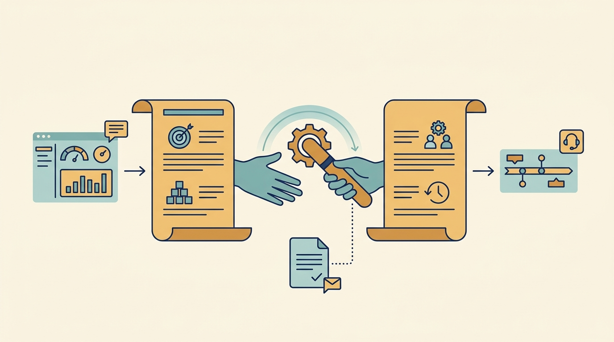

Part IV — Beyond Money: Using Investor Support to Build Capability and Accelerate Progress
Turn an Offer of Help into a Useful Engagement

AI-generated illustration
Part IV — Beyond Money: Using Investor Support to Build Capability and Accelerate Progress

AI-generated illustration